Clase 2 Regresión lineal
2.1 Introducción
Consideramos un problema de regresión con entradas \(X=(X_1,X_2,\ldots, X_p)\) y salida \(Y\). Una de las maneras más simples que podemos intentar para predecir \(Y\) en función de las \(X_j\)´s es mediante una suma ponderada de los valores de las \(X_j's\), usando una función
\[f_\beta (X) = \beta_0 + \beta_1 X_1 + \beta_2 X_2 + \cdots + \beta_p X_p,\] Nuestro trabajo será entonces, dada una muestra de entrenamiento \({\mathcal L}\), encontrar valores apropiados de las \(\beta\)’s, para construir un predictor:
\[\hat{f}(X) = \hat{\beta}_0 + \hat{\beta}_1 X_1 + \hat{\beta}_2 X_2 \cdots + \hat{\beta} X_p\] y usaremos esta función \(\hat{f}\) para hacer predicciones \(\hat{Y} =\hat{f}(X)\).
2.1.0.1 Ejemplos
Queremos predecir las ventas futuras anuales \(Y\) de un supermercado que se va a construir en un lugar dado. Las variables que describen el lugar son \(X_1 = trafico\_peatones\), \(X_2=trafico\_coches\). En una aproximación simple, podemos suponer que la tienda va a capturar una fracción de esos tráficos que se van a convertir en ventas. Quisieramos predecir con una función de la forma \[f_\beta (peatones, coches) = \beta_0 + \beta_1\, peatones + \beta_2\, coches.\] Por ejemplo, después de un análisis estimamos que
- \(\hat{\beta}_0 = 1000000\) (ventas base)
- \(\hat{\beta}_1 = (200)*0.02 = 4\)
- \(\hat{\beta}_2 = (300)*0.01 =3\)
Entonces haríamos predicciones con \[\hat{f}(peatones, coches) = 1000000 + 4\,peatones + 3\, coches\]
El modelo lineal es más flexible de lo que parece en una primera aproximación, porque tenemos libertad para construir las variables de entrada a partir de nuestros datos. Por ejemplo, si tenemos una tercera variable \(estacionamiento\) que vale 1 si hay un estacionamiento cerca o 0 si no lo hay, podríamos definir las variables
- \(X_1= peatones\)
- \(X_2 = coches\)
- \(X_3 = estacionamiento\)
- \(X_4 = coches*estacionamiento\)
Donde la idea de agregar \(X_4\) es que si hay estacionamiento entonces vamos a capturar una fracción adicional del trafico de coches, y la idea de \(X_3\) es que la tienda atraerá más nuevas visitas si hay un estacionamiento cerca. Buscamos ahora modelos de la forma
\[f_\beta(X_1,X_2,X_3,X_4) = \beta_0 + \beta_1X_1 + \beta_2 X_2 + \beta_3 X_3 +\beta_4 X_4\]
y podríamos obtener después de nuestra análisis las estimaciones
- \(\hat{\beta}_0 = 800000\) (ventas base)
- \(\hat{\beta}_1 = 4\)
- \(\hat{\beta}_2 = (300)*0.005 = 1.5\)
- \(\hat{\beta}_3 = 400000\)
- \(\hat{\beta}_4 = (300)*0.02 = 6\)
y entonces haríamos predicciones con el modelo
\[\hat{f} (X_1,X_2,X_3,X_4) = 800000 + 4\, X_1 + 1.5 \,X_2 + 400000\, X_3 +6\, X_4\]
2.2 Aprendizaje de coeficientes (ajuste)
En el ejemplo anterior, los coeficientes fueron calculados (o estimados) usando experiencia, argumentos teóricos, o quizá otras fuentes de datos (como estudios o encuestas, conteos, etc.)
Ahora quisiéramos construir un algoritmo para aprender estos coeficientes del modelo
\[f_\beta (X_1) = \beta_0 + \beta_1 X_1 + \cdots \beta_p X_p\] a partir de una muestra de entrenamiento
\[{\mathcal L}=\{ (x^{(1)},y^{(1)}),(x^{(2)},y^{(2)}), \ldots, (x^{(N)}, y^{(N)}) \}\]
El criterio de ajuste (algoritmo de aprendizaje) más usual para regresión lineal es el de mínimos cuadrados.
Construimos las predicciones (ajustados) para la muestra de entrenamiento: \[\hat{y}^{(i)} = f_\beta (x^{(i)}) = \beta_0 + \beta_1 x_1^{(i)}+ \cdots + \beta_p x_p^{(i)}\]
Y consideramos las diferencias de los ajustados con los valores observados:
\[e^{(i)} = y^{(i)} - f_\beta (x^{(i)})\]
La idea entonces es minimizar la suma de los residuales al cuadrado, para intentar que la función ajustada pase lo más cercana a los puntos de entrenamiento que sea posible. Si
\[RSS(\beta) = \sum_{i=1}^N (y^{(i)} - f_\beta(x^{(i)}))^2\] Queremos resolver
Mínimos cuadrados
\[\min_{\beta} RSS(\beta) = \min_{\beta}\sum_{i=1}^N (y^{(i)} - f_\beta(x^{(i)}))^2\]
2.2.0.1 Ejemplo
Consideremos
library(readr)
library(dplyr)
library(knitr)
prostata <- read_csv('datos/prostate.csv') %>% select(lcavol, lpsa, train)
kable(head(prostata), format = 'html')| lcavol | lpsa | train |
|---|---|---|
| -0.5798185 | -0.4307829 | TRUE |
| -0.9942523 | -0.1625189 | TRUE |
| -0.5108256 | -0.1625189 | TRUE |
| -1.2039728 | -0.1625189 | TRUE |
| 0.7514161 | 0.3715636 | TRUE |
| -1.0498221 | 0.7654678 | TRUE |
prostata_entrena <- filter(prostata, train)
ggplot(prostata_entrena, aes(x = lcavol, y = lpsa)) + geom_point()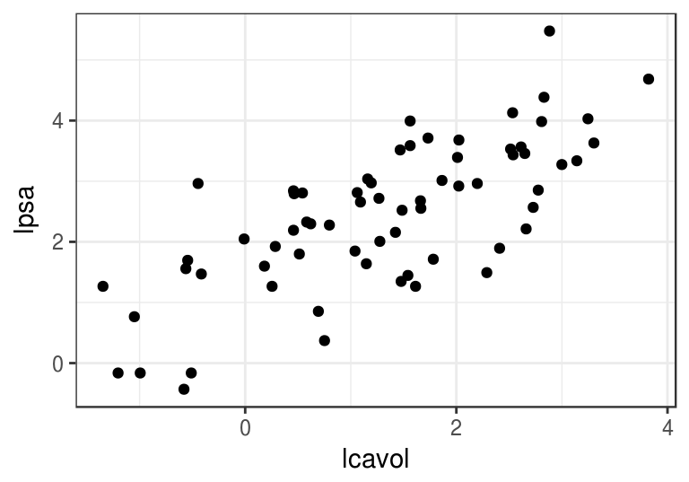
En este caso, buscamos ajustar el modelo (tenemos una sola entrada) \(f_{\beta} (X_1) = \beta_0 + \beta_1 X_1\), que es una recta. Los cálculos serían como sigue:
rss_calc <- function(datos){
y <- datos$lpsa
x <- datos$lcavol
fun_out <- function(beta){
y_hat <- beta[1] + beta[2]*x
e <- (y - y_hat)
rss <- sum(e^2)
0.5*rss
}
fun_out
}Nuestra función rss es entonces:
rss <- rss_calc(prostata_entrena)Por ejemplo, si consideramos \((\beta_0, \beta_1) = (0, 1.5)\), obtenemos
beta <- c(0,1.5)
rss(beta)## [1] 61.63861Que corresponde a la recta
ggplot(prostata_entrena, aes(x = lcavol, y = lpsa)) + geom_point() +
geom_abline(slope = beta[2], intercept = beta[1], col ='red')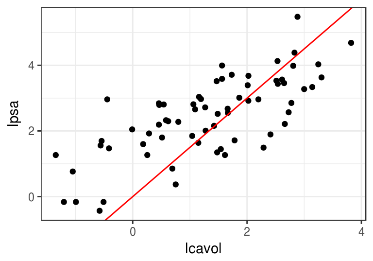
Podemos comparar con \((\beta_0, \beta_1) = (1, 1)\), obtenemos
beta <- c(1,1)
rss(beta)## [1] 27.11781ggplot(prostata_entrena, aes(x = lcavol, y = lpsa)) + geom_point() +
geom_abline(slope = beta[2], intercept = beta[1], col ='red')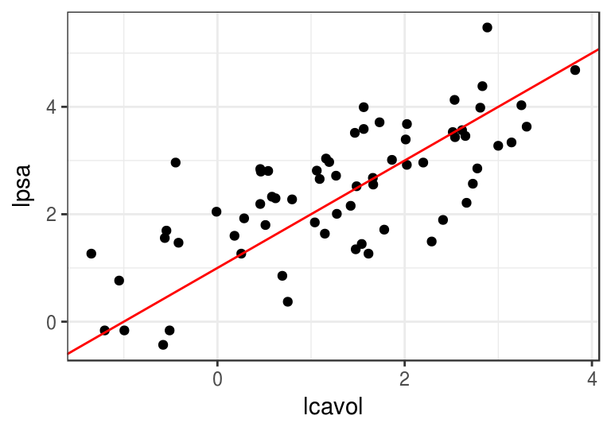
Ahora minimizamos. Podríamos hacer
res_opt <- optim(c(0,0), rss, method = 'BFGS')
beta_hat <- res_opt$par
beta_hat## [1] 1.5163048 0.7126351res_opt$convergence## [1] 0ggplot(prostata_entrena, aes(x = lcavol, y = lpsa)) + geom_point() +
geom_abline(slope = 1, intercept = 1, col ='red') +
geom_abline(slope = beta_hat[2], intercept = beta_hat[1]) 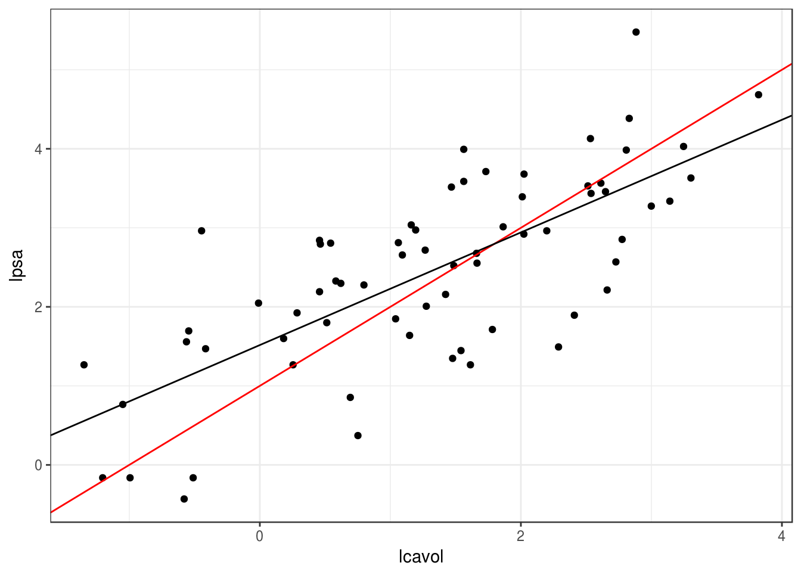
2.3 Descenso en gradiente
Aunque el problema de mínimos cuadrados se puede resolver analíticamente, proponemos un método numérico básico que es efectivo y puede escalarse a problemas grandes de manera relativamente simple: descenso en gradiente, o descenso máximo.
Supongamos que una función \(h(x)\) es convexa y tiene un mínimo. La idea de descenso en gradiente es comenzar con un candidato inicial \(z_0\) y calcular la derivada en \(z^{(0)}\). Si \(h(z^{(0)})>0\), la función es creciente en \(z^{(0)}\) y nos movemos ligeramente a la izquierda para obtener un nuevo candidato \(z^{(1)}\). si \(h(z^{(0)})<0\), la función es decreciente en \(z^{(0)}\) y nos movemos ligeramente a la derecha para obtener un nuevo candidato \(z^{(1)}\). Iteramos este proceso hasta que la derivada es cercana a cero (estamos cerca del óptimo).
Si \(\eta>0\) es una cantidad chica, podemos escribir
\[z^{(1)} = z^{(0)} - \eta \,h'(z^{(0)}).\]
Nótese que cuando la derivada tiene magnitud alta, el movimiento de \(z^{(0)}\) a \(z^{(1)}\) es más grande, y siempre nos movemos una fracción de la derivada. En general hacemos \[z^{(j+1)} = z^{(j)} - \eta\,h'(z^{(j)})\] para obtener una sucesión \(z^{(0)},z^{(1)},\ldots\). Esperamos a que \(z^{(j)}\) converja para terminar la iteración.
2.3.0.1 Ejemplo
Si tenemos
h <- function(x) x^2 + (x - 2)^2 - log(x^2 + 1)Calculamos (a mano):
h_deriv <- function(x) 2 * x + 2 * (x - 2) - 2*x/(x^2 + 1)Ahora iteramos con \(\eta = 0.4\) y valor inicial \(z_0=5\)
z_0 <- 5
eta <- 0.4
descenso <- function(n, z_0, eta, h_deriv){
z <- matrix(0,n, length(z_0))
z[1, ] <- z_0
for(i in 1:(n-1)){
z[i+1, ] <- z[i, ] - eta * h_deriv(z[i, ])
}
z
}
z <- descenso(20, 5, 0.1, h_deriv)
z## [,1]
## [1,] 5.000000
## [2,] 3.438462
## [3,] 2.516706
## [4,] 1.978657
## [5,] 1.667708
## [6,] 1.488834
## [7,] 1.385872
## [8,] 1.326425
## [9,] 1.291993
## [10,] 1.272002
## [11,] 1.260375
## [12,] 1.253606
## [13,] 1.249663
## [14,] 1.247364
## [15,] 1.246025
## [16,] 1.245243
## [17,] 1.244788
## [18,] 1.244523
## [19,] 1.244368
## [20,] 1.244277Y vemos que estamos cerca de la convergencia.
curve(h, -3, 6)
points(z[,1], h(z))
text(z[1:6], h(z[1:6]), pos = 3)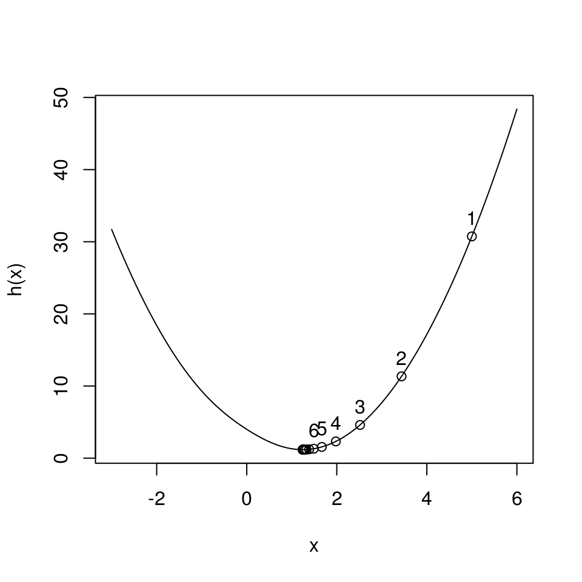
2.3.1 Selección de tamaño de paso \(\eta\)
Si hacemos \(\eta\) muy chico, el algoritmo puede tardar mucho en converger:
z <- descenso(20, 5, 0.01, h_deriv)
curve(h, -3, 6)
points(z, h(z))
text(z[1:6], h(z[1:6]), pos = 3)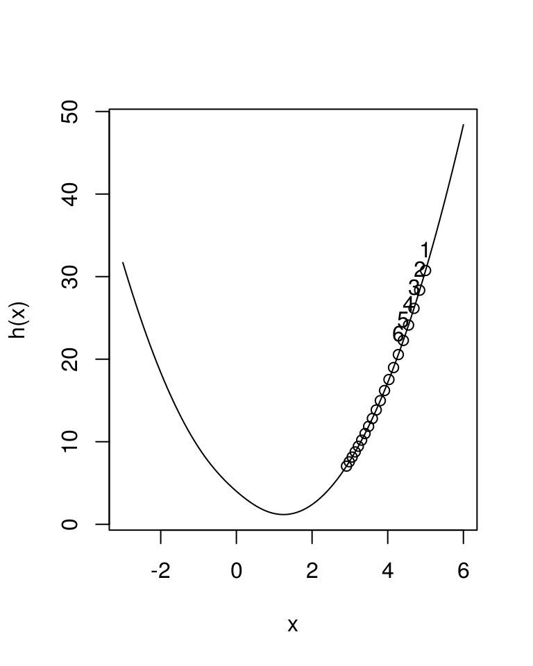
Si hacemos \(\eta\) muy grande, el algoritmo puede divergir:
z <- descenso(20, 5, 1.5, h_deriv)
z## [,1]
## [1,] 5.000000e+00
## [2,] -1.842308e+01
## [3,] 9.795302e+01
## [4,] -4.837345e+02
## [5,] 2.424666e+03
## [6,] -1.211733e+04
## [7,] 6.059265e+04
## [8,] -3.029573e+05
## [9,] 1.514792e+06
## [10,] -7.573955e+06
## [11,] 3.786978e+07
## [12,] -1.893489e+08
## [13,] 9.467445e+08
## [14,] -4.733723e+09
## [15,] 2.366861e+10
## [16,] -1.183431e+11
## [17,] 5.917153e+11
## [18,] -2.958577e+12
## [19,] 1.479288e+13
## [20,] -7.396442e+13Es necesario ajustar el tamaño de paso para cada problema particular. Si la convergencia es muy lenta, podemos incrementarlo. Si las iteraciones divergen, podemos disminuirlo
2.3.2 Funciones de varias variables
Si ahora \(h(z)\) es una función de \(p\) variables, podemos intentar la misma idea usando el gradiente. Por cálculo sabemos que el gradiente apunta en la dirección de máximo crecimiento local. El gradiente es el vector columna con las derivadas parciales de \(h\):
\[\nabla h(z) = \left( \frac{\partial h}{\partial z_1}, \frac{\partial h}{\partial z_2}, \ldots, \frac{\partial h}{\partial z_p} \right)^t\] Y el paso de iteración, dado un valor inicial \(z_0\) y un tamaño de paso \(\eta >0\) es
\[z^{(i+1)} = z^{(i)} - \eta \nabla h(z^{(i)})\]
Las mismas consideraciones acerca del tamaño de paso \(\eta\) aplican en el problema multivariado.
h <- function(z) {
z[1]^2 + z[2]^2 - z[1] * z[2]
}
h_gr <- function(z_1,z_2) apply(cbind(z_1, z_2), 1, h)
grid_graf <- expand.grid(z_1 = seq(-3, 3, 0.1), z_2 = seq(-3, 3, 0.1))
grid_graf <- grid_graf %>% mutate( val = apply(cbind(z_1,z_2), 1, h))
gr_contour <- ggplot(grid_graf, aes(x = z_1, y = z_2, z = val)) +
geom_contour(binwidth = 1.5, aes(colour = ..level..))
gr_contour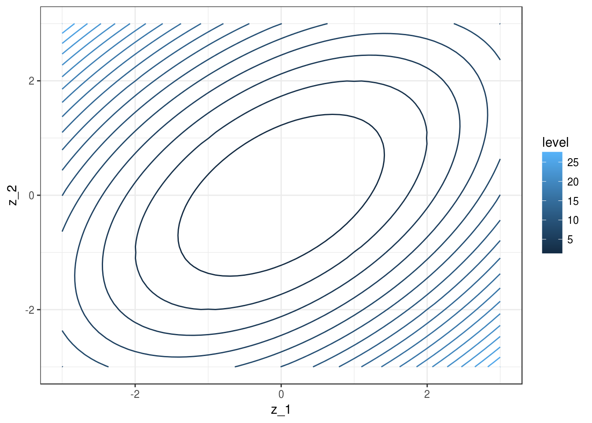
El gradiente está dado por
h_grad <- function(z){
c(2*z[1] - z[2], 2*z[2] - z[1])
}Podemos graficar la dirección de máximo descenso para diversos puntos. Estas direcciones son ortogonales a la curva de nivel que pasa por cada uno de los puntos:
grad_1 <- h_grad(c(0,-2))
grad_2 <- h_grad(c(1,1))
eta <- 0.2
gr_contour +
geom_segment(aes(x=0.0, xend=0.0-eta*grad_1[1], y=-2,
yend=-2-eta*grad_1[2]),
arrow = arrow(length = unit(0.2,"cm")))+
geom_segment(aes(x=1, xend=1-eta*grad_2[1], y=1,
yend=1-eta*grad_2[2]),
arrow = arrow(length = unit(0.2,"cm")))+ coord_fixed(ratio = 1)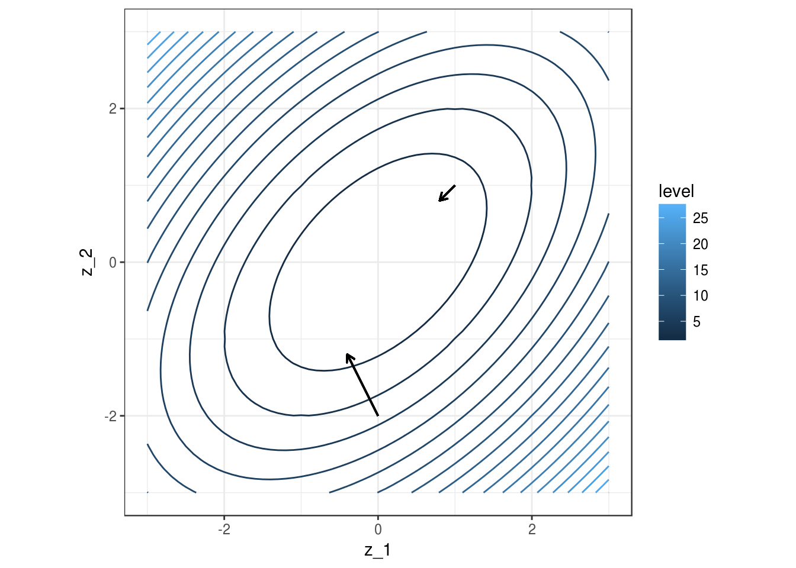
Y aplicamos descenso en gradiente:
inicial <- c(3, 1)
iteraciones <- descenso(20, inicial , 0.1, h_grad)
iteraciones## [,1] [,2]
## [1,] 3.0000000 1.0000000
## [2,] 2.5000000 1.1000000
## [3,] 2.1100000 1.1300000
## [4,] 1.8010000 1.1150000
## [5,] 1.5523000 1.0721000
## [6,] 1.3490500 1.0129100
## [7,] 1.1805310 0.9452330
## [8,] 1.0389481 0.8742395
## [9,] 0.9185824 0.8032864
## [10,] 0.8151946 0.7344874
## [11,] 0.7256044 0.6691094
## [12,] 0.6473945 0.6078479
## [13,] 0.5787004 0.5510178
## [14,] 0.5180621 0.4986843
## [15,] 0.4643181 0.4507536
## [16,] 0.4165298 0.4070347
## [17,] 0.3739273 0.3672807
## [18,] 0.3358699 0.3312173
## [19,] 0.3018177 0.2985609
## [20,] 0.2713102 0.2690305 ggplot(data= grid_graf) +
geom_contour(binwidth = 1.5, aes(x = z_1, y = z_2, z = val, colour = ..level..)) +
geom_point(data = data.frame(iteraciones), aes(x=X1, y=X2), colour = 'red')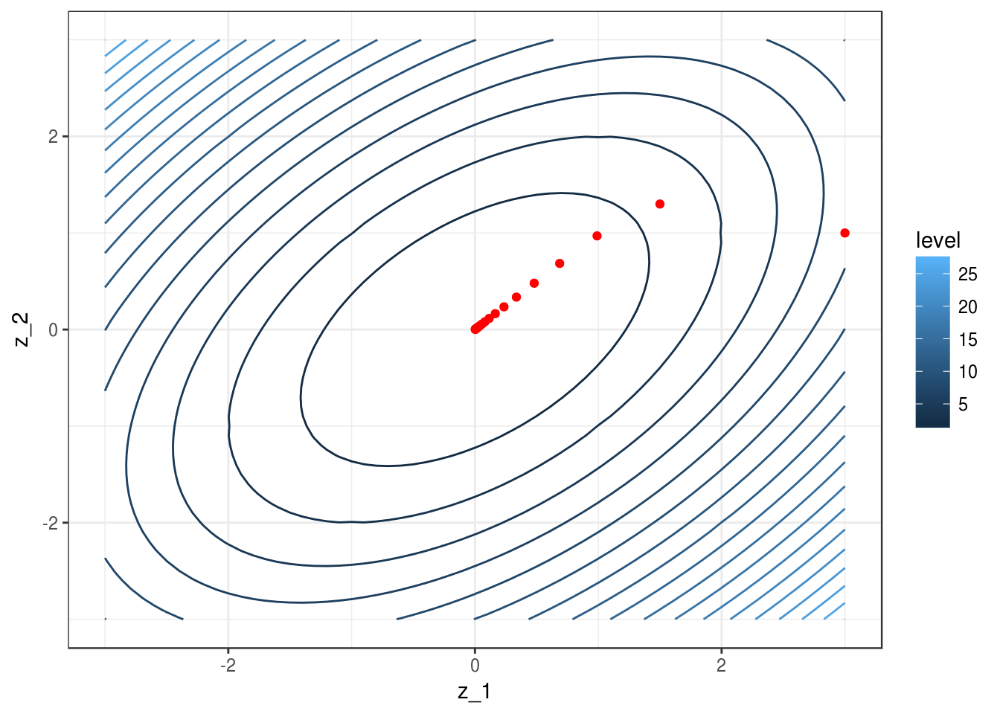
2.4 Descenso en gradiente para regresión lineal
Vamos a escribir ahora el algoritmo de descenso en gradiente para regresión lineal. Igual que en los ejemplos anteriores, tenemos que precalcular el gradiente. Una vez que esto esté terminado, escribir la iteración es fácil.
Recordamos que queremos minimizar (dividiendo entre dos para simplificar más adelante) \[RSS(\beta) = \frac{1}{2}\sum_{i=1}^N (y^{(i)} - f_\beta(x^{(i)}))^2\]
La derivada de la suma es la suma de las derivadas, así nos concentramos en derivar uno de los términos
\[ \frac{1}{2}(y^{(i)} - f_\beta(x^{(i)}))^2 \] Usamos la regla de la cadena para obtener \[ \frac{1}{2}\frac{\partial}{\partial \beta_j} (y^{(i)} - f_\beta(x^{(i)}))^2 = -(y^{(i)} - f_\beta(x^{(i)})) \frac{\partial f_\beta(x^{(i)})}{\partial \beta_j}\]
Ahora recordamos que \[f_{\beta} (x) = \beta_0 + \beta_1 x_1 + \beta_2 x_2 + \cdots + \beta_p x_p\]
Y vemos que tenemos dos casos. Si \(j=0\),
\[\frac{\partial f_\beta(x^{(i)})}{\partial \beta_0} = 1\] y si \(j=1,2,\ldots, p\) entonces
\[\frac{\partial f_\beta(x^{(i)})}{\partial \beta_j} = x_j^{(i)}\]
Entonces:
\[\frac{\partial f_\beta(x^{(i)})}{\partial \beta_0} = -(y^{(i)} - f_\beta(x^{(i)}))\] y
\[\frac{\partial f_\beta(x^{(i)})}{\partial \beta_j} = - x_j^{(i)}(y^{(i)} - f_\beta(x^{(i)}))\]
Y sumando todos los términos (uno para cada caso de entrenamiento):
Gradiente para regresión lineal
Sea \(e^{(i)} = y_{(i)} - f_{\beta} (x^{(i)})\). Entonces
\[\begin{equation} \frac{\partial RSS(\beta)}{\partial \beta_0} = - \sum_{i=1}^N e^{(i)} \tag{2.1} \end{equation}\] \[\begin{equation} \frac{\partial RSS(\beta)}{\partial \beta_j} = - \sum_{i=1}^N x_j^{(i)}e^{(i)} \tag{2.2} \end{equation}\]para \(j=1,2,\ldots, p\).
Nótese que cada punto de entrenamiento contribuye al cálculo del gradiente - la contribución es la dirección de descenso de error para ese punto particular de entrenamiento. Nos movemos entonces en una dirección promedio, para intentar hacer el error total lo más chico posible.
Podemos implementar ahora estos cálculos. Aunque podríamos escribir ciclos para hacer estos cálculos, es mejor hacer los cálculos en forma matricial, de manera que aprovechamos rutinas de álgebra lineal eficiente. El cálculo del gradiente es como sigue:
grad_calc <- function(x_ent, y_ent){
salida_grad <- function(beta){
f_beta <- as.matrix(cbind(1, x_ent)) %*% beta
e <- y_ent - f_beta
grad_out <- -apply(t(cbind(1,x_ent)) %*% e, 1, sum)
names(grad_out)[1] <- 'Intercept'
grad_out
}
salida_grad
}
grad <- grad_calc(prostata_entrena[, 1, drop = FALSE], prostata_entrena$lpsa)
grad(c(0,1))## Intercept lcavol
## -76.30319 -70.93938grad(c(1,1))## Intercept lcavol
## -9.303187 17.064556Podemos checar nuestro cálculo del gradiente:
delta <- 0.001
(rss(c(1 + delta,1)) - rss(c(1,1)))/delta## [1] -9.269687(rss(c(1,1+delta)) - rss(c(1,1)))/delta## [1] 17.17331Y ahora iteramos para obtener
iteraciones <- descenso(30, c(0,0), 0.005, grad)
iteraciones## [,1] [,2]
## [1,] 0.0000000 0.0000000
## [2,] 0.8215356 1.4421892
## [3,] 0.7332652 0.9545169
## [4,] 0.8891507 1.0360252
## [5,] 0.9569494 0.9603012
## [6,] 1.0353555 0.9370937
## [7,] 1.0977074 0.9046239
## [8,] 1.1534587 0.8800287
## [9,] 1.2013557 0.8576489
## [10,] 1.2430547 0.8385314
## [11,] 1.2791967 0.8218556
## [12,] 1.3105688 0.8074114
## [13,] 1.3377869 0.7948709
## [14,] 1.3614051 0.7839915
## [15,] 1.3818983 0.7745509
## [16,] 1.3996803 0.7663595
## [17,] 1.4151098 0.7592518
## [18,] 1.4284979 0.7530844
## [19,] 1.4401148 0.7477329
## [20,] 1.4501947 0.7430895
## [21,] 1.4589411 0.7390604
## [22,] 1.4665303 0.7355643
## [23,] 1.4731155 0.7325308
## [24,] 1.4788295 0.7298986
## [25,] 1.4837875 0.7276146
## [26,] 1.4880895 0.7256328
## [27,] 1.4918224 0.7239132
## [28,] 1.4950614 0.7224211
## [29,] 1.4978719 0.7211265
## [30,] 1.5003106 0.7200031Y checamos que efectivamente el error total de entrenamiento decrece
apply(iteraciones, 1, rss)## [1] 249.60960 51.70986 32.49921 28.96515 27.22475 25.99191 25.07023
## [8] 24.37684 23.85483 23.46181 23.16591 22.94312 22.77538 22.64910
## [15] 22.55401 22.48242 22.42852 22.38794 22.35739 22.33438 22.31706
## [22] 22.30402 22.29421 22.28681 22.28125 22.27706 22.27390 22.27153
## [29] 22.26974 22.26839Notación y forma matricial
Usando la notación de la clase anterior (agregando una columna de unos al principio):
\[\underline{X} = \left ( \begin{array}{ccccc} 1 & x_1^{(1)} & x_2^{(1)} & \ldots & x_p^{(1)} \\ 1 & x_1^{(2)} & x_2^{(2)} & \ldots & x_p^{(2)}\\ 1& \vdots & \vdots & & \vdots \\ 1 & x_1^{(N)} & x_2^{(N)} & \ldots & x_p^{(N)} \\ \end{array} \right)\]
y \[\underline{y} =(y^{(1)},y^{(2)}, \ldots, y^{(N)})^t.\]
Como \[\underline{e} = \underline{y} - \underline{X}\beta\]
tenemos entonces (de las fórmulas (2.1) y (2.2)): \[\begin{equation} \nabla RSS(\beta) = \underline{X}^t(\underline{X}\beta - \underline{y}) = -\underline{X}^t \underline{e} \tag{2.3} \end{equation}\]2.5 Normalización de entradas
La convergencia de descenso en gradiente (y también el desempeño numérico para otros algoritmos) puede dificultarse cuando las escalas tienen escalas muy diferentes. En este ejemplo simple, una variable tiene desviación estándar 10 y otra 1:
x2 <- rnorm(100, 0, 1)
x1 <- rnorm(100, 0, 10) + 5 * x2
y <- 0.1 * x1 + x2 + rnorm(100, 0, 1)
dat <- data_frame(x1, x2, y)
rss <- function(beta) mean((as.matrix(dat[, 1:2]) %*% beta - y)^2)
grid_beta <- expand.grid(beta1 = seq(-10, 10, 0.5), beta2 = seq(-10, 10, 0.5))
rss_1 <- apply(grid_beta, 1, rss)
dat_x <- data.frame(grid_beta, rss_1)
ggplot(dat_x, aes(x = beta1, y = beta2, z = rss_1)) + geom_contour()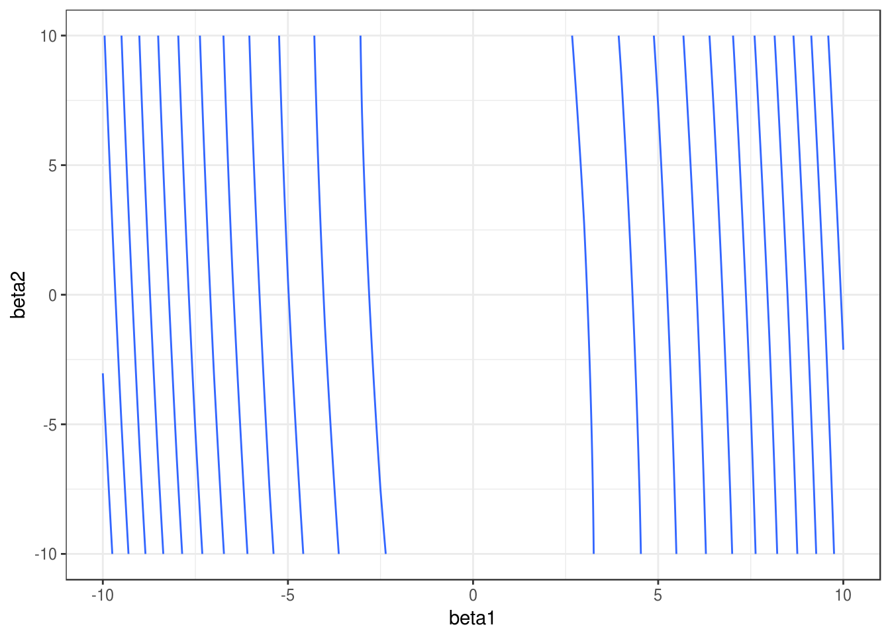
En algunas direcciones el gradiente es muy grande, y en otras chico. Esto implica que la convergencia puede ser muy lenta en algunas direcciones, puede diverger en otras, y que hay que ajustar el paso \(\eta > 0\) con cuidado, dependiendo de dónde comiencen las iteraciones.
Una normalización usual es con la media y desviación estándar, donde hacemos, para cada variable de entrada \(j=1,2,\ldots, p\) \[ x_j^{(i)} = \frac{ x_j^{(i)} - \bar{x}_j}{s_j}\] donde \[\bar{x}_j = \frac{1}{N} \sum_{i=1}^N x_j^{(i)}\] \[s_j = \sqrt{\frac{1}{N-1}\sum_{i=1}^N (x_j^{(i)}- \bar{x}_j )^2}\] es decir, centramos y normalizamos por columna. Otra opción común es restar el mínimo y dividir entre la diferencia del máximo y el mínimo, de modo que las variables resultantes toman valores en \([0,1]\).
Entonces escalamos antes de ajustar:
x1_s = (x1 - mean(x1))/sd(x1)
x2_s = (x2 - mean(x2))/sd(x2)
dat <- data_frame(x1_s, x2_s, y)
rss <- function(beta) mean((as.matrix(dat[, 1:2]) %*% beta - y)^2)
grid_beta <- expand.grid(beta1 = seq(-10, 10, 0.5), beta2 = seq(-10, 10, 0.5))
rss_1 <- apply(grid_beta, 1, rss)
dat_x <- data.frame(grid_beta, rss_1)
ggplot(dat_x, aes(x = beta1, y = beta2, z = rss_1)) + geom_contour()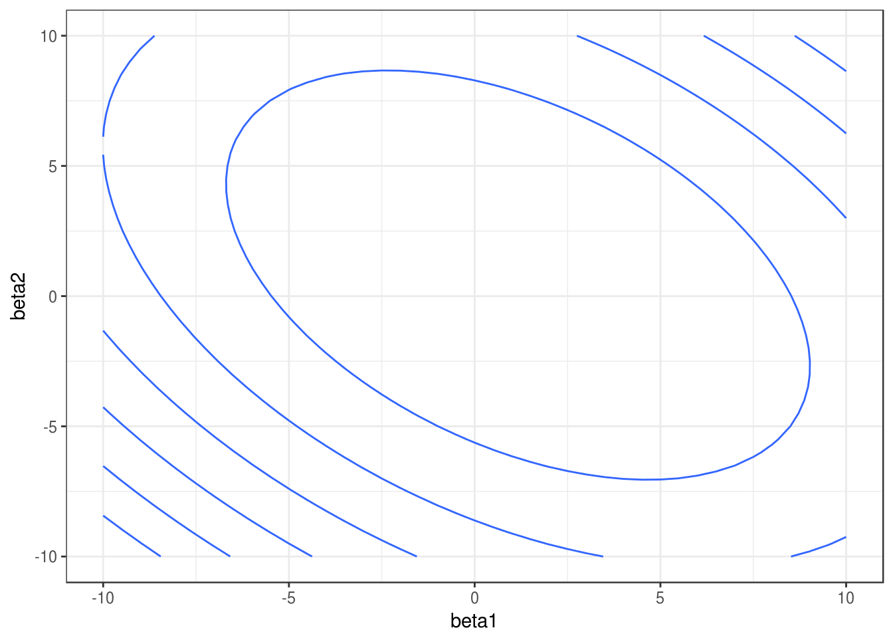
Nótese que los coeficientes ajustados serán diferentes a los del caso no normalizado.
2.6 Interpretación de modelos lineales
Muchas veces se considera que la facilidad de interpretación es una fortaleza del modelo lineal. Esto es en parte cierto, pero hay algunas consideraciones importantes que debemos tomar en cuenta.
La interpretación más sólida es la de las predicciones: podemos decir por qué una predicción es alta o baja.
Consideremos el ejemplo de cáncer de prostata, por ejemplo:
library(tidyr)
prostate_completo <- read_csv(file = 'datos/prostate.csv')
pr_entrena <- filter(prostate_completo, train)
pr_entrena <- pr_entrena %>% mutate(id = 1:nrow(pr_entrena))
#normalizamos
pr_entrena_s <-
pr_entrena %>%
select(id, lcavol, age, lpsa) %>%
gather(variable, valor, lcavol:age) %>%
group_by(variable) %>%
mutate(media = mean(valor), desv = sd(valor)) %>%
mutate(valor_s = (valor - media)/desv)
pr_modelo <- pr_entrena_s %>% select(id, lpsa, variable, valor_s) %>%
spread(variable, valor_s)
mod_pr <- lm( lpsa ~ lcavol + age , data = pr_modelo )
round(coefficients(mod_pr), 2)## (Intercept) lcavol age
## 2.45 0.88 0.02y observamos el rango de \(lpsa\):
round(summary(pr_modelo$lpsa), 2)## Min. 1st Qu. Median Mean 3rd Qu. Max.
## -0.43 1.67 2.57 2.45 3.37 5.48Ahora podemos interpretar el predictor:
- Cuando las variables lcavol y age están en sus media, la predicción de lpsa es 2.5
- Si lcavol sube 1 desviación estándar por encima de la media, el predictor de lpsa sube alrededor de 0.9 unidades (de un rango de alrededor de 6 unidades)
- Si age sube 1 desviación estándar por encima de su media, el predictor de lpsa sube 0.02, lo cual es un movimiento muy chico considerando la variación de lpsa.
Así podemos explicar cada predicción - considerando qué variables aportan positiva y cuáles negativamente a la predicción. El camino más seguro es limitarse a hacer este tipo de análisis de las predicciones. Hablamos de entender la estructura predictiva del problema con los datos que tenemos - y no intentamos ir hacia la explicación del fenómeno.
Cualquier otra interpretación requiere mucho más cuidados, y requiere una revisión de la especificación correcta del modelo. Parte de estos cuidados se estudian en un curso de regresión desde el punto de vista estadístico, por ejemplo:
Variación muestral. Es necesario considerar la variación en nuestras estimaciones de los coeficientes para poder concluir acerca de su relación con el fenómeno (tratable desde punto de vista estadístico, pero hay que checar supuestos). Quizá el error de estimación del coeficiente de lcavol es 2 veces su magnitud - difícilmente podemos concluir algo acerca la relación de lcavol.
Efectos no lineales: si la estructura del problema es altamente no lineal, los coeficientes de un modelo lineal no tienen una interpretación clara en relación al fenómeno. Esto también es parcialmente tratable con diagnósticos.
set.seed(2112)
x <- rnorm(20)
y <- x^2
summary(lm(y ~x))##
## Call:
## lm(formula = y ~ x)
##
## Residuals:
## Min 1Q Median 3Q Max
## -0.7462 -0.5022 -0.3313 0.3435 1.6273
##
## Coefficients:
## Estimate Std. Error t value Pr(>|t|)
## (Intercept) 0.85344 0.17570 4.857 0.000127 ***
## x 0.04117 0.18890 0.218 0.829929
## ---
## Signif. codes: 0 '***' 0.001 '**' 0.01 '*' 0.05 '.' 0.1 ' ' 1
##
## Residual standard error: 0.7484 on 18 degrees of freedom
## Multiple R-squared: 0.002632, Adjusted R-squared: -0.05278
## F-statistic: 0.0475 on 1 and 18 DF, p-value: 0.8299Otros cuidados adicionales se requieren si queremos hacer afirmaciones causales:
- Variables omitidas: si faltan algunas variables cruciales en el fenómeno que nos interesa, puede ser muy difícil interpretar el resto de los coeficientes en términos del fenómeno
Ejemplo:
- Supongamos que queremos predecir cuánto van a gastar en televisiones samsung ciertas personas que llegan a Amazon. Una variable de entrada es el número de anuncios de televisiones Samsung que recibieron antes de llegar a Amazon. El coeficiente de esta variable es alto (significativo, etc.), así que concluimos que el anuncio causa compras de televisiones Samsung.
¿Qué está mal aquí? El modelo no está mal, sino la interpretación. Cuando las personas están investigando acerca de televisiones, recibe anuncios. La razón es que esta variable nos puede indicar más bien quién está en proceso de compra de una televisión samsung (reciben anuncios) y quién no (no hacen búsquedas relevantes, así que no reciben anuncios). El modelo está mal especificado porque no consideramos que hay otra variable importante, que es el interés de la persona en compra de TVs Samsung.
En general, la recomendación es que las interpretaciones causales deben considerarse como preliminares (o sugerencias), y se requiere más análisis y consideraciones antes de poder tener interpretaciones causales sólidas.
Ejercicio
En el siguiente ejercicio intentamos predecir el porcentaje de grasa corporal (una medición relativamente cara) usando mediciones de varias partes del cuerpo, edad, peso y estatura. Ver script bodyfat_ejercicio.R
library(tidyr)
dat_grasa <- read_csv(file = 'datos/bodyfat.csv')
head(dat_grasa)## # A tibble: 6 x 14
## grasacorp edad peso estatura cuello pecho abdomen cadera muslo
## <dbl> <int> <dbl> <dbl> <dbl> <dbl> <dbl> <dbl> <dbl>
## 1 12.3 23 154.25 67.75 36.2 93.1 85.2 94.5 59.0
## 2 6.1 22 173.25 72.25 38.5 93.6 83.0 98.7 58.7
## 3 25.3 22 154.00 66.25 34.0 95.8 87.9 99.2 59.6
## 4 10.4 26 184.75 72.25 37.4 101.8 86.4 101.2 60.1
## 5 28.7 24 184.25 71.25 34.4 97.3 100.0 101.9 63.2
## 6 20.9 24 210.25 74.75 39.0 104.5 94.4 107.8 66.0
## # ... with 5 more variables: rodilla <dbl>, tobillo <dbl>, biceps <dbl>,
## # antebrazo <dbl>, muñeca <dbl>nrow(dat_grasa)## [1] 2522.7 Solución analítica
El problema de mínimos cuadrados tiene una solución de forma cerrada. A partir del gradiente (2.3), podemos igual a cero y resolver (chécalo) para obtener:
\[\begin{equation*} \hat{\beta} = \left (\underline{X}\underline{X}^t \right)^{-1} \underline{X}^t\underline{y} \end{equation*}\]Paquetes como lm de R usan como base esta expresión, pero los cálculos se hacen mediante descomposiciones matriciales para más estabilidad (productos de matrices e inversiones). Aunque es posible escalar y/o paralelizar estos cálculos matriciales para problemas grandes, los procedimientos son más delicados. Nuestro enfoque de descenso máximo tiene la ventaja de que es fácil de entender, usar, aplicar a otros problemas con éxito, y además puede escalarse trivialmente, como veremos más adelante (por ejemplo, descenso estocástico). ¡Aunque siempre que se pueda es buena idea usar lm!
2.8 ¿Por qué el modelo lineal funciona bien (muchas veces)?
Regresión lineal es un método muy simple, y parecería que debería haber métodos más avanzados que lo superen fácilmente.
Para empezar, es poco creíble que el modelo \[f(X) = b_0 + b_1X_1 + \cdots b_p X_p\] se cumple exactamente para el fenómeno que estamos tratando. Pero regresión lineal muchas veces supera a métodos s que intentan construir predictores más complejos. Una de las primeras razones es que podemos ver la aproximación lineal como una aproximación de primer orden a la verdadera \(f(X)\), y muchas veces eso es suficiente para producir predicciones razonables.
Adicionalmente, otras veces sólo tenemos suficientes datos para hacer una aproximación de primer orden, aún cuando la verdadera \(f(X)\) no sea lineal, y resulta que esta aproximación da buenos resultados. Esto es particularmente cierto en problemas de dimensión alta, como veremos a continuación.
2.8.1 k vecinos más cercanos
Un método popular, con buen desempeño en varios ejemplos, es el de k-vecinos más cercanos, que consiste en hacer aproximaciones locales directas de \(f(X)\). Sea \({\mathcal L}\) un conjunto de entrenamiento. Para \(k\) entera fija, y \(x_0\) una entrada donde queremos predecir, definimos a \(N_k(x_0)\) como el conjunto de los \(k\) elementos de \({\mathcal L}\) que tienen \(x^{(i)}\) más cercana a \(x_0\). Hacemos la predicción \[\hat{f}(x_0) = \frac{1}{k}\sum_{x^{(i)} \in N_k(x_0)} y^{(i)}\]
Es decir, promediamos las \(k\) \(y\)’s con \(x\)’s más cercanas a donde queremos predecir.
Ejemplo
library(ISLR)
datos <- Auto[, c('name', 'weight','year', 'mpg')]
datos$peso_kg <- datos$weight*0.45359237
datos$rendimiento_kpl <- datos$mpg*(1.609344/3.78541178)
nrow(datos)## [1] 392Vamos a separa en muestra de entrenamiento y de prueba estos datos. Podemos hacerlo como sigue (2/3 para entrenamiento aproximadamente en este caso, así obtenemos alrededor de 100 casos para prueba):
set.seed(213)
datos$muestra_unif <- runif(nrow(datos), 0, 1)
datos_entrena <- filter(datos, muestra_unif > 1/3)
datos_prueba <- filter(datos, muestra_unif <= 1/3)
nrow(datos_entrena)## [1] 274nrow(datos_prueba)## [1] 118ggplot(datos_entrena, aes(x = peso_kg, y = rendimiento_kpl)) +
geom_point()
Consideremos un modelo de \(k=15\) vecinos más cercanos. La función de predicción ajustada es entonces:
library(kknn)
# nótese que no normalizamos entradas - esto también es importante
# hacer cuando hacemos vecinos más cercanos, pues en otro caso
# las variables con escalas más grandes dominan el cálculo
mod_15vmc <- kknn(rendimiento_kpl ~ peso_kg, train = datos_entrena,
test = data_frame(peso_kg=seq(700,2200, by = 10)),
k=15)
dat_graf <- data_frame(peso_kg = seq(700,2200, by = 10),
rendimiento_kpl = predict(mod_15vmc))
ggplot(datos_entrena, aes(x = peso_kg, y = rendimiento_kpl)) +
geom_point(alpha=0.6) +
geom_line(data=dat_graf, col='red', size = 1.2)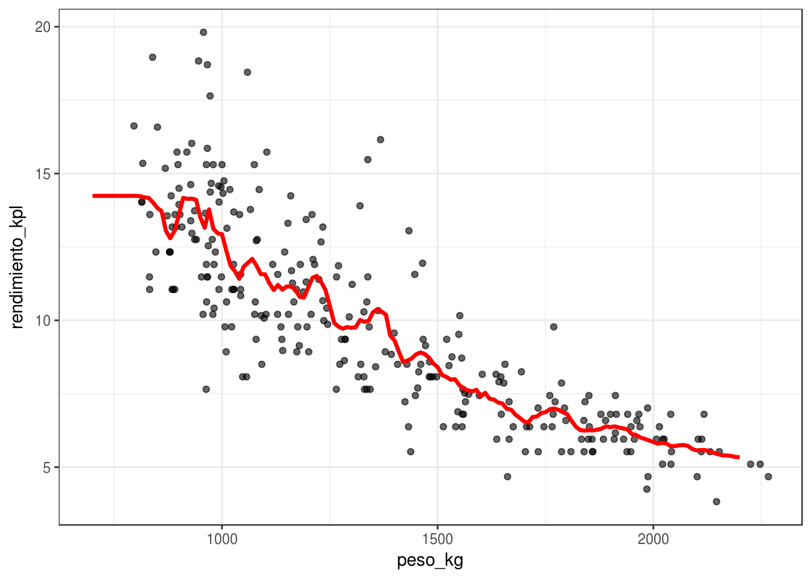
Y para \(k=5\) vecinos más cercanos:
mod_5vmc <- kknn(rendimiento_kpl ~ peso_kg, train = datos_entrena,
test = data_frame(peso_kg=seq(700,2200, by = 10)),
k = 5)
dat_graf <- data_frame(peso_kg = seq(700,2200, by = 10),
rendimiento_kpl = predict(mod_5vmc))
ggplot(datos_entrena, aes(x = peso_kg, y = rendimiento_kpl)) +
geom_point(alpha=0.6) +
geom_line(data=dat_graf, col='red', size = 1.2)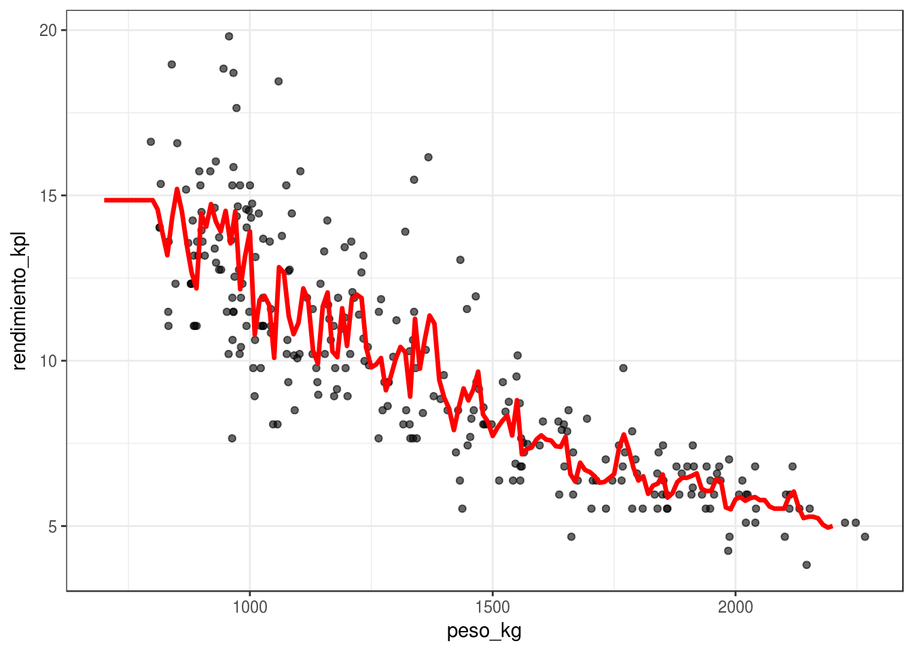
En nuestro caso, los errores de prueba son
mod_3vmc <- kknn(rendimiento_kpl ~ peso_kg, train = datos_entrena,
test = datos_prueba,
k = 3)
mod_15vmc <- kknn(rendimiento_kpl ~ peso_kg, train = datos_entrena,
test = datos_prueba,
k = 15)
(mean((datos_prueba$rendimiento_kpl-predict(mod_3vmc))^2))## [1] 3.346934(mean((datos_prueba$rendimiento_kpl-predict(mod_15vmc))^2))## [1] 2.697658Pregunta: ¿Cómo escogerías una \(k\) adecuada para este problema? Recuerda que adecuada significa que se reduzca a mínimo posible el error de predicción. Como ejercicio, compara los modelos con \(k = 2, 25, 200\) utilizando una muestra de prueba. ¿Cuál se desempeña mejor? Da las razones de el mejor o peor desempeño: recuerda que el desempeño en predicción puede sufrir porque la función estimada no es suficiente flexible para capturar patrones importantes, pero también porque parte del ruido se incorpora en la predicción.
Por los ejemplos anteriores, vemos que k-vecinos más cercanos puede considerarse como un aproximador universal, que puede adaptarse a cualquier patrón importante que haya en los datos. Entonces, ¿cuál es la razón de utilizar otros métodos como regresión? ¿Por qué el desempeño de regresión sería superior?
La maldición de la dimensionalidad
El método de k-vecinos más cercanos funciona mejor cuando hay muchas \(x\) cercanas a \(x0\), de forma que el promedio sea estable (muchas \(x\)), y extrapolemos poco (\(x\) cercanas). Cuando \(k\) es muy chica, nuestras estimaciones son ruidosas, y cuando \(k\) es grande y los vecinos están lejos, entonces estamos sesgando la estimación local con datos lejanos a nuestra región de interés.
El problema es que en dimensión alta, casi cualquier conjunto de entrenamiento (independientemente del tamaño) sufre fuertemente por uno o ambas dificultades del problema.
Ejemplo
Consideremos que la salida Y es determinística \(Y = e^{-8\sum_{j=1}^p x_j^2}\). Vamos a usar 1-vecino más cercano para hacer predicciones, c on una muestra de entrenamiento de 1000 casos. Generamos $x^{i}‘s uniformes en \([ 1,1]\), para \(p = 2\), y calculamos la respuesta \(Y\) para cada caso:
fun_exp <- function(x) exp(-8*sum(x^2))
x_1 <- runif(1000, -1, 1)
x_2 <- runif(1000, -1, 1)
dat <- data_frame(x_1 = x_1, x_2 = x_2)
dat$y <- apply(dat, 1, fun_exp)
ggplot(dat, aes(x = x_1, y = x_2, colour = y)) + geom_point()
La mejor predicción en \(x_0 = (0,0)\) es \(f((0,0)) = 1\). Eñ vecino más cercano al origen es
dist_origen <- apply(dat, 1, function(x) sqrt(sum(head(x, -1)^2)))
mas_cercano_indice <- which.min(dist_origen)
mas_cercano <- dat[mas_cercano_indice, ]
mas_cercano## # A tibble: 1 x 3
## x_1 x_2 y
## <dbl> <dbl> <dbl>
## 1 0.03268542 0.01006107 0.9906871Nuestra predicción es entonces \(\hat{f}(0)=\) 0.9906871, que es bastante cercano al valor verdadero (1).
Ahora intentamos hacer lo mismo para dimensión \(p=8\).
dat_lista <- lapply(1:8, function(i) runif(1000, -1, 1))
dat <- Reduce(cbind, dat_lista) %>% data.frame
dat$y <- apply(dat, 1, fun_exp)
dist_origen <- apply(dat, 1, function(x) sqrt(sum(head(x, -1)^2)))
mas_cercano_indice <- which.min(dist_origen)
mas_cercano <- dat[mas_cercano_indice, ]
mas_cercano## init V2 V3 V4 V5 V6
## 239 0.1612183 0.4117209 0.2546389 -0.226929 0.0774977 0.03897632
## V7 V8 y
## 239 -0.4959736 0.0382697 0.01073141Y el resultado es un desastre. Nuestra predicción es
mas_cercano$y## [1] 0.01073141Necesitariamos una muestra de alrededor de un millón de casos para obtener resultados no tan malos (pruébalo).
¿Qué es lo que está pasando? La razón es que en dimensiones altas, los puntos de la muestra de entrenamiento están muy lejos unos de otros, y están cerca de la frontera, incluso para tamaños de muestra relativamente grandes como n = 1000. Cuando la dimensión crece, la situación empeora exponencialmente.
En dimensiones altas, todos los conjuntos de entrenamiento factibles se distribuyen de manera rala en el espacio de entradas.
Ahora intentamos algo similar con una función que es razonable aproximar con una función lineal:
fun_cubica <- function(x) 0.5 * (1 + x[1])^3
set.seed(821)
sims_1 <- lapply(1:40, function(i) runif(1000, -0.5, 0.5) )
dat <- data.frame(Reduce(cbind, sims_1))
dat$y <- apply(dat, 1, fun_cubica)
dist_origen <- apply(dat[, 1:40], 1, function(x) sqrt(sum(x^2)))
mas_cercano_indice <- which.min(dist_origen)
dat$y[mas_cercano_indice]## [1] 0.09842398Este no es un resultado muy bueno. Sin embargo,
mod_lineal <- lm(y ~ ., data = dat)
origen <- data.frame(matrix(rep(0,40), 1, 40))
names(origen) <- names(dat)[1:40]
predict(mod_lineal, newdata = origen)## 1
## 0.6251876Donde podemos ver que típicamente la predicción de regresión es mucho mejor que la de 1 vecino más cercano. Esto es porque el modelo explota la estructura aproximadamente lineal del problema. Nota: corre este ejemplo varias veces con semilla diferente.
Lo que sucede más específicamente es que en regresión lineal utilizamos todos los datos para hacer nuestra estimación en cada predicción. Si la estructura del problema es aproximadamente lineal, entonces regresión lineal explota la estructura para hacer pooling de toda la infromación para construir predicción con sesgo y varianza bajas.
Tarea
Para este ejemplo usaremos los datos de https://archive.ics.uci.edu/ml/machine-learning-databases/housing/. El objetivo es predecir el valor mediano de las viviendas en áreas del censo de Estados Unidos, utilizando variables relacionadas con criminalidad, ambiente, tipo de viviendas, etc.
- Separa la muestra en dos partes: unos 400 para entrenamiento y el resto para prueba.
- Describe las variables en la muestra de prueba (rango, media, mediana, por ejemplo).
- Construye un modelo lineal para predecir MEDV en términos de las otras variables. Utiliza descenso en gradiente para estimar los coeficientes con los predictores estandarizados. Verifica tus resultados con la función lm.
- Evalúa el error de entrenamiento \(\overline{err}\) de tu modelo, y evalúa después la estimación del error de predicción \(\hat{Err}\) con la muestra de prueba. Utiliza la raíz del la media de los errores al cuadrado.
- (Adicional) Construye un modelo de 1,5,20 y 50 vecinos más cercanos, y evalúa su desempeño. ¿Cuál es la mejor \(k\) para reducir el error de prueba?
Cuando normalizamos antes de ajustar el modelo, las predicciones deben hacerse con entradas normalizadas. La normalización se hace con los mismos valores que se usaron en el entrenamiento (y no recalculando medias y desviaciones estándar con el conjunto de prueba).
En cuanto a la forma funcional del predictor f, el problema con entradas normalizadas es equivalente al de las entradas no normalizadas. Asegúrate de esto escribiendo cómo correponden los coeficientes de cada modelo normalizado con los coeficientes del modelo no normalizado.